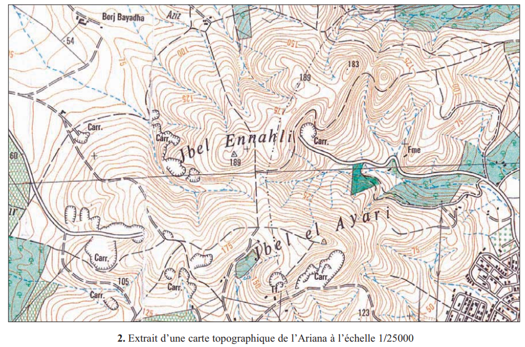
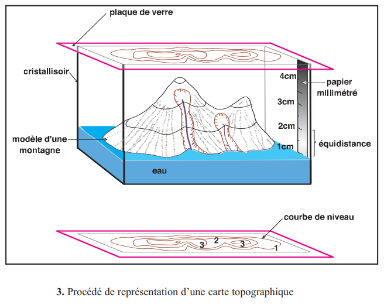
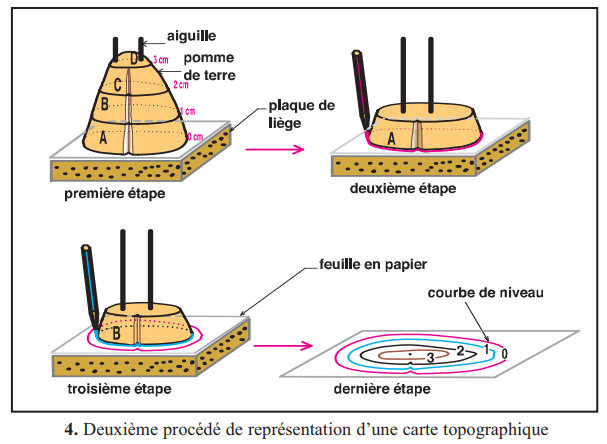
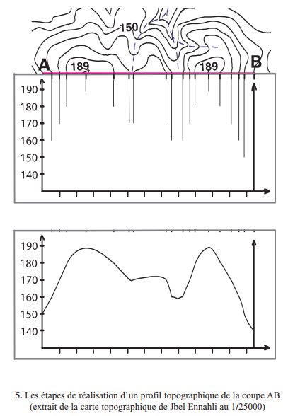
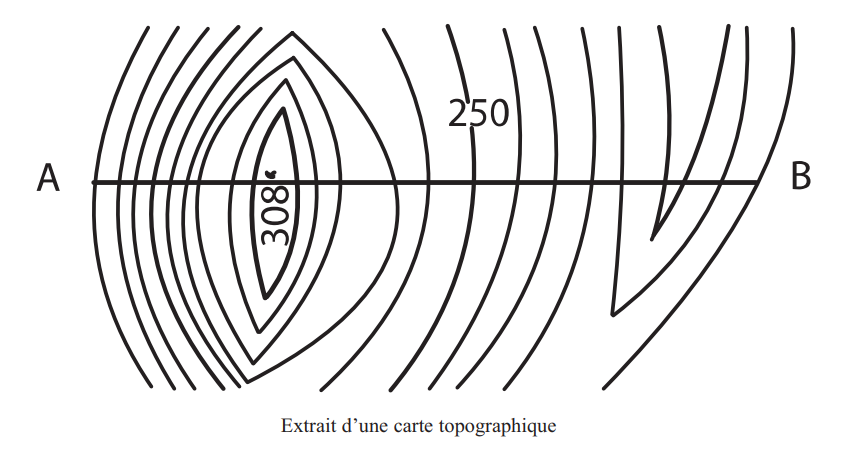

🎯 Pourquoi ce chapitre ? — Objectif du programme
Selon le programme officiel tunisien (Thème 1 — Exploitation rationnelle des ressources géologiques), ce chapitre vise à :
- Expliquer comment le relief est représenté sur une carte topographique.
- Maîtriser les notions d'échelle, de courbes de niveau et de relief.
- Réaliser un profil topographique pour visualiser la forme du terrain.
🔗 Ces compétences sont fondamentales pour la suite du thème : sans savoir lire une carte topo, impossible d'exploiter une carte géologique (Ch.3), de localiser des ressources en eau (Ch.4) ou de rechercher des gisements (Ch.5 & 6).
📚 Préacquis (p.7)
- Un paysage = relief + eau + végétation + aménagements humains + roches affleurantes
- L'étude géologique utilise des cartes et l'observation d'affleurements naturels (falaises, oueds) ou artificiels (carrières)
- Le sous-sol est formé de roches. Les roches dures (calcaires) forment les reliefs saillants, les roches tendres (argiles) forment les creux
- Les roches sont disposées en strates (couches) formées par sédimentation
- Les strates peuvent renfermer des fossiles
- L'étude des strates et des fossiles permet de reconstituer l'histoire géologique d'une région
❓ 2 Questions directrices du chapitre
- Comment un relief est-il représenté sur une carte ?
- Comment représente-t-on la forme d'un relief à partir d'une carte ?
1. Lire une carte topographique — Orientation, Échelle, Courbes de niveau

📐 L'Orientation et l'Échelle
| Élément | Définition | Exemple |
|---|---|---|
| Orientation | Le nord est indiqué sur toute carte topo (flèche ou rose des vents) | N, S, E, O — Points cardinaux |
| Échelle e | Rapport entre distance sur la carte (d) et distance réelle (D) : e = d / D | 1/25 000 → 1 cm = 250 m |
| Point coté | Altitude précise d'un point particulier (sommet, cuvette...) | ▲ 634 |
| Légende | Symboles des éléments représentés (routes, cours d'eau, végétation...) | Bleu = eau, vert = forêt |
📏 Les Courbes de Niveau
| Notion | Définition |
|---|---|
| Courbe de niveau | Ligne reliant tous les points situés à la même altitude |
| Équidistance | Différence d'altitude entre 2 courbes de niveau consécutives |
| Courbe maîtresse | Courbe en trait gras (toutes les 5 courbes normales) |
| Courbes serrées | → pente forte |
| Courbes espacées | → pente faible / plaine |
Courbes maîtresses : équidistance = 25, 50 ou 100 m.
Règle pratique : sur une carte au 1/25 000, l'équidistance standard est 10 m. Donc si tu vois une courbe cotée 100 et la suivante cotée 110, l'équidistance = 10 m.
1. L'échelle 1/50 000 signifie que 1 cm sur la carte = .
2. Des courbes de niveau très rapprochées représentent une .
3. L'équidistance est la différence d'altitude entre .
4. Le point coté indique .
2. Principe de la carte topographique — Les 2 manipulations
🧪 Méthode 1 — Cristallisoir (p.11)

| Étape | Action | Ce qu'on obtient |
|---|---|---|
| 1 | Relief en pâte à modeler dans un cristallisoir | Modèle 3D du terrain |
| 2 | Remplir d'eau colorée jusqu'à 1 cm | Plan horizontal d'altitude 1 |
| 3 | Tracer le contour eau/relief sur la plaque de verre | Courbe de niveau à altitude 1 |
| 4 | Répéter jusqu'au sommet | Ensemble des courbes = carte topo |
🥔 Méthode 2 — Tranches (p.12)

| Étape | Action | Ce qu'on obtient |
|---|---|---|
| 1 | Couper le relief en tranches horizontales équidistantes de 1 cm | Tranches A, B, C, D... |
| 2 | Poser tranche A sur papier, tracer son contour | Courbe à altitude 0 |
| 3 | Enlever A, poser B, tracer son contour | Courbe à altitude 1 |
| 4 | Répéter pour C, D... | Ensemble des courbes = carte topo |
Quel est le but commun des deux méthodes (cristallisoir et tranches) ? Quel concept fondamental de la carte topographique veulent-elles illustrer ?
Cliquez sur "Vérifier" pour comparer votre réponse avec la correction.
1. Dans la méthode du cristallisoir, chaque niveau d'eau correspond à .
2. Les deux méthodes (cristallisoir et tranches) donnent le même résultat car elles utilisent toutes les deux .
3. Sur une montagne à pente forte, les courbes de niveau obtenues seront .
3. Réaliser un Profil Topographique — 9 étapes (p.13)
| N° | Étape |
|---|---|
| 1 | Tracer et flécher les axes (horizontal = distances, vertical = altitudes) |
| 2 | Légender les deux axes |
| 3 | Choisir une échelle des altitudes et graduer |
| 4 | Reporter chaque point (intersection courbe/trait AB) à son altitude |
| 5 | Relier tous les points à main levée |
| 6 | Donner un titre au profil |
| 7 | Indiquer l'orientation du profil (N→S, E→O...) |
| 8 | Préciser les échelles utilisées |
| 9 | Indiquer les localités importantes sur la courbe |

📌 Retenons (bilan p.14 + objectifs du programme officiel)
1. Dans un profil topographique, l'axe horizontal représente les et l'axe vertical représente les .
2. Pour construire le profil, on applique une feuille de papier millimétré contre , puis on reporte chaque .
3. L'exagération verticale dans un profil sert à .
1La carte topographique est la représentation, à , d'un sur un plan. Elle fournit des informations précises sur les formes du relief, la végétation et les réalisations humaines.
2L'échelle est le rapport entre la distance réduite mesurée sur la carte (d) et la distance réelle sur le terrain (D). Exemple : à l'échelle 1/50 000, un écart de 1 cm sur la carte correspond à .
Exemple : D = 800 m = 80 000 cm. d = 4 cm. → e = 4/80 000 = 1/20 000.
Pour trouver D : D = d × X (X = dénominateur de l'échelle). Ex : d = 6 cm, e = 1/50 000 → D = 6 × 50 000 = 300 000 cm = 3 km.
Pour trouver d : d = D / X. Ex : D = 5 km = 500 000 cm, e = 1/25 000 → d = 500 000 / 25 000 = 20 cm.
3Le relief est représenté par des = lignes reliant tous les points situés à la même altitude. L' est la différence d'altitude entre deux courbes consécutives. Plus les courbes sont rapprochées, plus la pente est .
Cuvette/vallée : courbes concentriques fermées, valeurs décroissant vers le centre.
Plaine : courbes très espacées ou absentes.
Versant raide : courbes très serrées.
Col : selle entre deux sommets, courbes en forme de sablier.
4Un profil topographique AB est la représentation d'une coupe verticale du relief entre deux points A et B. La distance est portée en et l'altitude en . On applique une feuille de papier millimétré contre le trait de coupe AB, on reporte les intersections avec les courbes, puis on .
🃏 Flashcards — Vocabulaire clé
✏️ QCM — Manuel (p.15) + Questions complémentaires
Vérification question par question. Cliquez sur "Vérifier" après chaque réponse.
📋 QCM du manuel — Page 15
📝 QCM complémentaires — Approfondissement
📝 Exercices interactifs — D'après le manuel (p.15–16)
📐 Ex.1 — Calcul d'échelle guidé (exercice corrigé p.16)
Étape 1 — Convertir D en cm : D = 800 m = .
Étape 2 — Appliquer la formule : e = d / D = 4 / = .
Conclusion : l'échelle de cette carte est au .
📊 Ex.2 — Tableau de calculs d'échelle (exercices non corrigés p.16)
| Exercice | Donnée 1 | Donnée 2 | À calculer | Réponse |
|---|---|---|---|---|
| 1 — Trouver D | d = 6 cm | e = 1/50 000 | D = d × 50 000 = ? | |
| 2 — Trouver d | D = 5 km = 500 000 cm | e = 1/25 000 | d = D / 25 000 = ? | |
| 3 — Trouver e | d = 15 cm | D = 7 500 m = 750 000 cm | e = 15 / 750 000 = ? | |
| 4 — Trouver e | d = 3 cm | D = 300 m = 30 000 cm | e = 3 / 30 000 = ? |
🔢 Ex.3 — Ordonner les 9 étapes du profil topographique
Glisser-déposer pour remettre ces étapes dans le bon ordre :
🗻 Ex.4 — Lire et interpréter des courbes de niveau
| Question | Réponse |
|---|---|
| Zone A (courbes espacées) correspond à une | |
| Zone B (courbes serrées) correspond à une | |
| La distance réelle entre 2 courbes dans la zone A (2 cm sur carte, échelle 1/50 000) | |
| L'altitude du sommet si la dernière courbe visible est cotée 400 m et il reste encore des courbes au-dessus |
🗺️ Ex.5 — Exercice de synthèse : Profil topographique complet (type examen)
Consignes : 1- Déterminer l'équidistance. 2- Réaliser le profil topographique AB. 3- Décrire le relief obtenu.

1. Sur cette carte, les courbes de niveau sont cotées 100, 150, 200, 250... L'équidistance est donc de .
2. La courbe 250 est une .
3. Pour le profil AB, l'axe horizontal représente et l'axe vertical représente .
4. Si l'échelle horizontale est 1/50 000, une distance de 10 cm sur la carte représente .